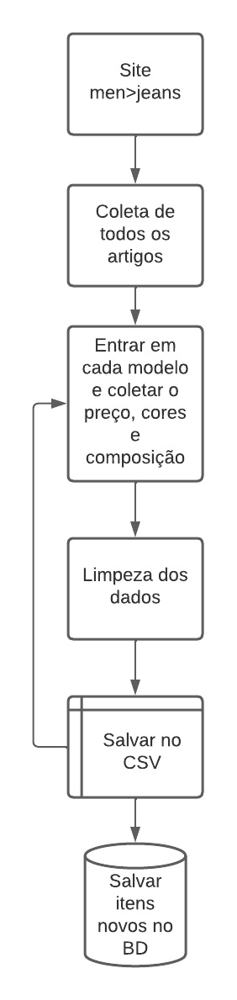

Projeto de Web Scraping
O tema base do projeto é auxiliar investidores que pretendem abrir uma loja virtual, inicialmente focada em calças jeans masculina no mercado americano, mas que não tem nenhuma experiência no ramo.
Como objetivo inicial, os investidores precisam saber diversas informações sobre os produtos, como preço de venda, cores e composição.
Para coleta dos dados requeridos escolhi duas grandes lojas do mercado de moda, atuantes no mercado americano. São elas H&M e Macys.
Clicando na imagem abaixo, você será redimensionado para o resultado da coleta de dados e Dashboard.
Detalhes do Projeto
Questão de Negócio
O que se quer resolver?
Coletar dados relevantes sobre os produtos.
Dados relevantes:
- Cores;
- Composição;
- Preço.
Qual a problema, a dor, a necessidade dos sócios?
Precificar e escolher os produdos que serão vendidos na nova loja.
Planejamento da Solução
Qual o plano utilizado para resolver o problema?
- Coleta dos dados dos sites da H&M e Macys de forma automatizada durante aproximadamente um mês;
- Parametrização e limpeza dos dados obtidos;
- Salvamento dos novos dados obtidos no banco de dados;
- Construção do dashboard para melhor visualização e avaliação dos dados obtidos.
A imagem abaixo demonstra o fluxo utilizado na coleta dos dados.
Insights obtidos através dos dados
- Durante a obtenção dos dados pude perceber que há uma diferença de público-alvo entre as duas lojas, a H&M é uma loja mais focada no público de menor poder aquisitivo e a Macys é mais focada em um público de médio poder aquisitivo, isso é perceptível através do preço geral dos produtos, o valor mais alto da H&M é parecido com o menor valor da Macys. Então a escolha do público-alvo do novo empreendimento deve ser algo importante para definição dos produtos oferecidos pela loja ou se ela vai tentar atrair os dois tipos de público de uma vez.
- A média de novos produtos na vitrine é de quatro por semana.
- A H&M por ter como alvo um público com menor poder aquisitivo usa nomes de cores bem simples, já a Macys utiliza nomes compostos para a descrição das cores.
Conclusão
Através do web scraping consegui coletar uma boa quantidade de informações úteis para a tomada de decisão dos investidores, ainda consegui montar um bashboard para comparação das informações.
Lições aprendidas
Nesse segundo projeto de ciência de dados pude aplicar os conhecimentos obtidos no curso e ir além aprendendo novas ferramentas não apresentadas no curso para chegar ao resultado esperado.
Próximos passos
Após definido o público alvo da nova loja, poderia coletar os dados de mais uma ou duas empresas concorrentes para aumentar a acertivida das decisões.
Contatos
Fique a vontade para entrar em contato comigo através dos contatos abaixo.